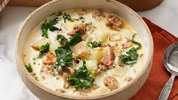

Zuppa Toscana

This is an oh-so-good recipe. Just the right amount of spice to make you take a cold drink but
definitely keep coming back for more!
This soup is irresistible!
Ingredients
- 1 pound bulk mild Italian sausage
- 1 ¼ teaspoons crushed red pepper flakes
- 4 slices bacon, cut into 1/2 inch pieces
- 1 large onion, diced
- 2 teaspoons kosher salt
- 1 teaspoon sugar
Steps
- Cook the Italian sausage
- Cook the bacon
- Pour the chicken